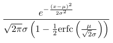
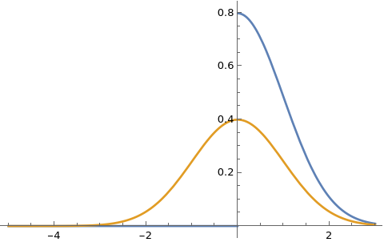

Day 23: Generic, general random number simulation using the Inverse CDF method in PDL
If you are generating truly random numbers for esoteric distributions, you need PDL!
Sometimes one finds themselves in need of a truly general random number generator from a distribution for which no random generator is (easily) accessible. In other cases, one would like to generate random numbers from truncated versions of common distributions, e.g. those in which the support is a proper subset of the original distribution. To visualize an example, consider the Gaussian distribution, which usually "runs" from negative to positive infinity and has the probability density function:
if one were to restrict it to just the positive numbers, the mathematical expression for the density changes to this Grinch:

Or for those who prefer visuals, here is our truncated Grinch towering over the unsuspecting normal cousin:

While one can use custom algorithms to simulate numbers from such distributions, there is one truly general method to accomplish this task, the inverse CDF method.
Given a random variable X with CDF , the method is based on the principle that if U is a uniform random variable on
(0,1), then has the same distribution as X. This method requires that the CDF
is invertible, which is the case for most continuous distributions. For discrete distributions, the method can be adapted by using the inverse of the discrete CDF. Here is what is the inverse CDF algorithm looks like:
- Generate a uniform random number u in the interval
(0,1)for the non-truncated case. To sample from the distribution of a random variable X that is truncated to the interval[L,R]one draws the uniform random value in the interval.
- Compute
, where
is the inverse of the CDF function[1] of X.
- The number x is a random number distributed according to the distribution of X.
The necessary components for the algorithm are thus: a) methods to compute and
for a specific distribution X and b) facilities to draw uniform random numbers.
One reasonably clean way to pack this logic into a software component is to
- import all the relevant definitions from a module that provides methods for the CDF and inverse CDF methods for a very large collection of random distributions into a new module
- compose a role for the inverse CDF method into the module of the previous step
- provide the module for the simulation with a plugin for the random number simulator
With this design, one examines the performance gains of different codings of the inverse CDF method, i.e. by composing modules for stochastic simulation that compose alternatives roles AND different random number simulators. The latter is particularly important as there alternatives for the underlying engine that draws the random uniform numbers; these alternatives differ in speed of generation, statistical correctness and (less relevant for our application) cryptographic security. In Perl, two modules PDL::GSL::CDF and Math::GSL::CDF provide interfaces to the CDF functions of the (very large) collection of random distributions in the GSL library. The main difference between the two packages is that the former provides access to these distributions via a PDL interface, while the latter is a pure Perl module. PDL also provides alternatives to the Perl rand function for the uniform random number generator (RNG); one can also use the RNG from the GSL itself, or PDL's builtin replacement random that is based on the highly performant Xoshiro generators.
I recently had to create a Perl wrapper to extend Polyester, a bioinformatics R package, which gave me the opportunity to take the truncated Mr Grinch for a ride on Santa PDL sleigh. The relevant packages were created under the TailingPolyester distribution. The role for simulating possibly truncated distributions using PDL is shown below:
use strict;
use warnings;
package Bio::SeqAlignment::Examples::TailingPolyester::SimulateTruncatedRNGPDL;
use Carp;
use PDL;
use Role::Tiny;
requires qw(random has_distr cdf inv_cdf);
sub simulate_trunc {
my $self = shift;
my %args = @_;
my $random_dim = $args{random_dim} || [1]; ## default to 1 random number
my $distr = $args{distr} || 'flat';
my $left_trunc_lmt = $args{left_trunc_lmt} || 'missing';
my $right_trunc_lmt = $args{right_trunc_lmt} || 'missing';
my $params = $args{params} || 'missing';
my $cdf_val_at_left_trunc_lmt;
my $cdf_val_at_right_trunc_lmt;
## set up sanity checks
croak "The distribution $distr is not available"
unless $self->has_distr($distr); ## distr must exist
if ( $params eq 'missing' && $distr ne 'flat' ) {
croak "Must provide parameters for the distribution $distr";
} ##and parameters cannot be missing unless it is a flat distribution
## set up CDF computations at the truncation limits
if ( $left_trunc_lmt eq 'missing' ) {
$cdf_val_at_left_trunc_lmt = pdl(0);
}
else {
$left_trunc_lmt = pdl($left_trunc_lmt);
$cdf_val_at_left_trunc_lmt =
$self->cdf( $distr, $left_trunc_lmt, $params );
}
if ( $right_trunc_lmt eq 'missing' ) {
$cdf_val_at_right_trunc_lmt = pdl(1);
}
else {
$right_trunc_lmt = pdl($right_trunc_lmt);
$cdf_val_at_right_trunc_lmt =
$self->cdf( $distr, $right_trunc_lmt, $params );
}
my $domain_lengh_trunc_distr =
$cdf_val_at_right_trunc_lmt - $cdf_val_at_left_trunc_lmt;
## now simulate the truncated distribution using vectorized instructions
my $simulated_values = $self->random($random_dim);
$simulated_values->inplace->mult($domain_lengh_trunc_distr);
$simulated_values->inplace->plus($cdf_val_at_left_trunc_lmt);
return $self->inv_cdf( $distr, $simulated_values, $params );
}
1;
While we showed the entire package, it is really the last four lines that do the heavy lifting. If one were to write the last four lines of code in base Perlone has an option between the cake (use map but pay the price of multiple memory allocations) or eating the cake (a for loop that transforms each of the uniform random numbers in place):
my $simulated_values = $self->random($random_dim);
my $num_rand_values = scalar $simulated_values->@*;
for my $i ( 0 .. $num_rand_values - 1 ) {
$simulated_values->[$i] =
$simulated_values->[$i] * $domain_lengh_trunc_distr +
$cdf_val_at_left_trunc_lmt;
$simulated_values->[$i] =
$self->inv_cdf( $distr, $simulated_values->[$i], $params );
}
return $simulated_values;
Note that PDL implementation of the inverse CDF matches that in the R programming language, but the PDL offers in place calculations (these are still experimental in R) and as we will see it also delivers superior performance.
lowercdf <-ifelse(is.null(lower),0,cdf(lower,...))
uppercdf <-ifelse(is.null(upper),1,cdf(upper,...))
domain <-uppercdf - lowercdf
simvals<-uniform(n)
simvals<-lowercdf + simvals*domain
invcdf(simvals,...)
Santa Perl and PDL laboratory made for us many presents for truncated random number generation as the table below shows:
| Uniform random number generator | CDF Library |
|---|---|
| Perl's rand | Math::GSL |
| Perl's rand | PDL::GSL |
| PDL's random | Math::GSL |
| PDL's random | PDL::GSL |
But which one is the speediest , and how does it hold up against an implementation of the same method in R (which also offers the possibility of swapping its builtin random number generator for the Xoshiro one)?
The two modules, i.e. SimulateMathGSL and SimulatePDLGSL and the two uniform random generators plugins, i.e. PERLRNG and PDLRNG become available by installing Bio::SeqAlignment::Examples::TailingPolyester (Santa makes a mental note that these probably deserve to be given their own distribution next year).
But which one out of these four options is the speediest , and how does it hold up against an implementation of the same method in R (which also offers the possibility of swapping its builtin random number generator for the Xoshiro one by installing the library dqRNGkind)? Furthermore, what is the price one has to pay for the object oriented paper that wraps the gifts? The quick elf in Santa's laboratory would point out that one could throw together at least three different and possibly faster non object oriented solutions:
- create multiple implementations, e.g.
simulate_trunc_UniformRNG_CDFLibrarythat hard wire the function calls inside them - use an
evalstring for the uniform RNG and CDF libraries (the elf was immediately banished from Santa's laboratory for bringing this up) - provide code references to the
simulate_truncfunction for the random number generator and the CDF subroutines
However, the kids that wrote to Santa asking for non-object oriented gifts, were naughty this year and Santa told them they will get such gifts in R this year. But all the gifts would be opened and benchmarked on Christmas night!
To benchmark, I used the following code that uses the package Benchmark::CSV to obtain raw timings for a thousand replications of the generation of 1M random variates from the log-normal distribution.
use v5.36;
use strict;
use warnings;
use Benchmark::CSV;
use Carp;
use Class::Tiny;
use Bio::SeqAlignment::Examples::TailingPolyester::PERLRNGPDL;
use Bio::SeqAlignment::Examples::TailingPolyester::PERLRNG;
use Bio::SeqAlignment::Examples::TailingPolyester::PDLRNG;
use Bio::SeqAlignment::Examples::TailingPolyester::GSLRNG;
use Bio::SeqAlignment::Examples::TailingPolyester::SimulatePDLGSL;
use Bio::SeqAlignment::Examples::TailingPolyester::SimulateMathGSL;
use Cwd;
use File::Spec;
use PDL;
use PDL::IO::CSV ':all';
use PDL::GSL::RNG;
use Time::HiRes 'time';
my $benchmark_reps = 1000;
my $distr = 'lognormal';
my $iter = 1000000;
my $t = time;
my $params = [ log(125), 1 ];
my $lower_trunc_limit = 0;
my $upper_trunc_limit = 250;
set_autopthread_size(1024*256); ## ensures we will only use 1 thread
## generate RNG objects to assess object construction overhead
my $rng_PERLRNGPDL =
Bio::SeqAlignment::Examples::TailingPolyester::SimulatePDLGSL->new(
seed => 3,
rng_plugin => 'Bio::SeqAlignment::Examples::TailingPolyester::PERLRNGPDL'
); ## perl rng with PDL
my $rng_PERLRNG =
Bio::SeqAlignment::Examples::TailingPolyester::SimulateMathGSL->new(
seed => 3,
rng_plugin => 'Bio::SeqAlignment::Examples::TailingPolyester::PERLRNG'
); ## perl rng with Math::GSL
my $rng_RNG =
Bio::SeqAlignment::Examples::TailingPolyester::SimulatePDLGSL->new(
seed => 3,
rng_plugin => 'Bio::SeqAlignment::Examples::TailingPolyester::PDLRNG'
);
my $rng_PDLGSLUNIF =
Bio::SeqAlignment::Examples::TailingPolyester::SimulatePDLGSL->new(
seed => 3,
rng_plugin => 'Bio::SeqAlignment::Examples::TailingPolyester::GSLRNG',
RNG_init_parameters => ['mt19937']
); ## GSL uniform RNG with PDL
my $cwd = getcwd();
my $benchmark = Benchmark::CSV->new(
output => File::Spec->catfile($cwd,'testPerl.csv'),
sample_size => 1,
);
$benchmark->add_instance(
PDLGSL_PERLRNGPDL_WITH_OC => sub {
my $rng =
Bio::SeqAlignment::Examples::TailingPolyester::SimulatePDLGSL->new(
seed => 3,
rng_plugin =>
'Bio::SeqAlignment::Examples::TailingPolyester::PERLRNGPDL'
);
my $pdl = $rng->simulate_trunc(
random_dim => [$iter],
distr => $distr,
params => $params,
left_trunc_lmt => $lower_trunc_limit,
right_trunc_lmt => $upper_trunc_limit,
);
}
);
$benchmark->add_instance(
MathMLGSL_PERLRNG_WITH_OC => sub {
my $rng =
Bio::SeqAlignment::Examples::TailingPolyester::SimulateMathGSL->new(
seed => 3,
rng_plugin =>
'Bio::SeqAlignment::Examples::TailingPolyester::PERLRNG'
);
my $pdl = $rng->simulate_trunc(
random_dim => [$iter],
distr => $distr,
params => $params,
left_trunc_lmt => $lower_trunc_limit,
right_trunc_lmt => $upper_trunc_limit,
);
}
);
$benchmark->add_instance(
PDLGSL_PDLUNIF_WITH_OC => sub {
my $rng =
Bio::SeqAlignment::Examples::TailingPolyester::SimulatePDLGSL->new(
seed => 3,
rng_plugin =>
'Bio::SeqAlignment::Examples::TailingPolyester::PDLRNG'
);
my $pdl = $rng->simulate_trunc(
random_dim => [$iter],
distr => $distr,
params => $params,
left_trunc_lmt => $lower_trunc_limit,
right_trunc_lmt => $upper_trunc_limit,
);
}
);
$benchmark->add_instance(
PDLGSL_PDLGSLUNIF_WITH_OC => sub {
my $rng =
Bio::SeqAlignment::Examples::TailingPolyester::SimulatePDLGSL->new(
seed => 3,
rng_plugin =>
'Bio::SeqAlignment::Examples::TailingPolyester::GSLRNG',
RNG_init_parameters => ['mt19937']
);
my $pdl = $rng->simulate_trunc(
random_dim => [$iter],
distr => $distr,
params => $params,
left_trunc_lmt => $lower_trunc_limit,
right_trunc_lmt => $upper_trunc_limit,
);
}
);
$benchmark->add_instance(
PDLGSL_PERLRNGPDL_WO_OC => sub {
my $pdl = $rng_PERLRNGPDL->simulate_trunc(
random_dim => [$iter],
distr => $distr,
params => $params,
left_trunc_lmt => $lower_trunc_limit,
right_trunc_lmt => $upper_trunc_limit,
);
}
);
$benchmark->add_instance(
MathMLGSL_PERLRNG_WO_OC => sub {
my $pdl = $rng_PERLRNG->simulate_trunc(
random_dim => [$iter],
distr => $distr,
params => $params,
left_trunc_lmt => $lower_trunc_limit,
right_trunc_lmt => $upper_trunc_limit,
);
}
);
$benchmark->add_instance(
PDLGSL_PDLUNIF_WO_OC => sub {
my $pdl = $rng_RNG->simulate_trunc(
random_dim => [$iter],
distr => $distr,
params => $params,
left_trunc_lmt => $lower_trunc_limit,
right_trunc_lmt => $upper_trunc_limit,
);
}
);
$benchmark->add_instance(
PDLGSL_PDLGSLUNIF_WO_OC => sub {
my $pdl = $rng_PDLGSLUNIF->simulate_trunc(
random_dim => [$iter],
distr => $distr,
params => $params,
left_trunc_lmt => $lower_trunc_limit,
right_trunc_lmt => $upper_trunc_limit,
);
}
);
$benchmark->run_iterations($benchmark_reps);
It is instructive to look at the R side comparators, because R will vectorize certain mathematical and statistical operations over containers out of the box. It also allows one to search functions through symbolic reference searches over the visible stashes, and other constructs familiar to the Perl programmer, e.g. the eval of strings (elf go back to the cold), which is why the author finds it very easy to go from Perl to R and back when the application demands it.
library(dqrng)
library(data.table)
library(vioplot)
library(microbenchmark)
rm(list=ls());gc()
simtrunceval<-function(n,distr=NULL,uniformRNG=NULL,lower=NULL,upper=NULL,...){
cdf<-function(x,...) eval(parse(text=paste("p",distr,sep="")))(x,...)
invcdf<-function(x,...) eval(parse(text=paste("q",distr,sep="")))(x,...)
uniform = function(x,...) eval(parse(text=uniformRNG))(x)
lowercdf <-ifelse(is.null(lower),0,cdf(lower,...))
uppercdf <-ifelse(is.null(upper),1,cdf(upper,...))
domain <-uppercdf - lowercdf
simvals<-uniform(n)
simvals<-lowercdf + simvals*domain
invcdf(simvals,...)
}
simtruncget<-function(n,distr=NULL,uniformRNG=NULL,lower=NULL,upper=NULL,...){
cdf<-get(paste("p", distr, sep = ""))
invcdf<-get(paste("q", distr, sep = ""))
uniform = get(uniformRNG)
lowercdf <-ifelse(is.null(lower),0,cdf(lower,...))
uppercdf <-ifelse(is.null(upper),1,cdf(upper,...))
domain <-uppercdf - lowercdf
simvals<-uniform(n)
simvals<-lowercdf + simvals*domain
invcdf(simvals,...)
}
simtruncfixedrunif<-function(n,lower=NULL,upper=NULL,...){
lowercdf <-ifelse(is.null(lower),0,plnorm(lower,...))
uppercdf <-ifelse(is.null(upper),1,plnorm(upper,...))
domain <-uppercdf - lowercdf
simvals<-runif(n)
simvals<-lowercdf + simvals*domain
qlnorm(simvals,...)
}
simtruncfixedqrng<-function(n,lower=NULL,upper=NULL,...){
lowercdf <-ifelse(is.null(lower),0,plnorm(lower,...))
uppercdf <-ifelse(is.null(upper),1,plnorm(upper,...))
domain <-uppercdf - lowercdf
simvals<-dqrunif(n)
simvals<-lowercdf + simvals*domain
qlnorm(simvals,...)
}
simnontruncget<-function(n,distr=NULL,...){
sim<-get(paste("r", distr, sep = ""))
sim(n,...)
}
Benchmarking the R code, requires more R code:
dqRNGkind("Xoshiro256+")
iter = 1000000
times<-1000
distr="lnorm"
leftrunc=0
rightrunc=250
param1=log(125)
param2=1
timeunif<-microbenchmark(vals<-simtrunceval(iter,distr,'runif',leftrunc,rightrunc,param1,param2),times=times)
timeunifget<-microbenchmark(valsget<-simtruncget(iter,distr,'runif',leftrunc,rightrunc,param1,param2),times=times)
timedruniffixed<-microbenchmark(valsd<-simtruncfixedrunif(iter,leftrunc,rightrunc,param1,param2),times=times)
timedqrunif<-microbenchmark(valsd<-simtrunceval(iter,distr,'dqrunif',leftrunc,rightrunc,param1,param2),times=times)
timedqrunifget<-microbenchmark(valsdget<-simtruncget(iter,distr,'dqrunif',leftrunc,rightrunc,param1,param2),times=times)
timedqruniffixed<-microbenchmark(valsd<-simtruncfixedqrng(iter,leftrunc,rightrunc,param1,param2),times=times)
time<-microbenchmark(x<-dqrunif(iter),times=times)
Finally, plotting the results (as a violin plot, that overlays smoothed density estimates of the timings, over boxplots of the data), reveals the truth, the whole truth and nothing but the truths:
- Lack of vectorization is the major impediment to high performance Perl scripts for numerical or statistical calculations for big data. This is clearly seen when comparing the performance of the 1) MathMLGSL_PERLRNG implementations that use base Perl for both random number generation and for coding of the inverse CDF method to that of 2) PDLGSL_PERLRNG that generate random numbers through base Perl, but use the PDL wrapper over GSL to vectorize 3) the pure PDL implementations PDLGSL_PDLUNIF that use PDL to both simulate the uniform numbers and compute the CDFs.
- The speed of the vectorized PDL implementation that also used the PDL RNG were competitive with the R code that used the Xoshiro implementation.
- The Xoshiro based implementations achieved the best performance in either language. In R the difference is largely due to the speed of the RNG relative to the one builtin the language, whereas in Perl the difference can be attributed to the non-vectorized nature of base Perl AND the RNG. The former is the biggest source of performance drop as can be seen from the comparison of the lower four violin plots , which swapped the Xoshiro for the GSL default RNG, but kept vectorization for calculations.
- Object construction (contrast violin plots "WO_OC" vs "WITH_OC") had negligible effect on the relative performance of all Perl implementations.
- Despite appeals to avoid "eval" strings in R (yes elf, you cannot use
evalin either R or Perl), the choice of method to access dependencies (e.g. the inverse CDF method, or the RNG) had minimal effect on performance. - The performance of all R implementations was much more variable (largest spread on the x-axis) with many more outliers than any of the Perl implementations. The reason for the rather variable performance of the R code is not clear to us, but could be related to the lazy evaluation properties of R code.
In summary, these observations should direct us to utilize the combination of Perl and PDL more frequently in data analytics. Stated in other terms, PDL offers a bewildering array of performant modules for numerical and statistical calculations and if you are not comfortable (or unwilling) to deploy multi-language applications, learning and using PDL, will be the best gift you can ask Santa to bring you. Even if that gift is to be given to a truncated distribution Grinch.
[1] The inverse CDF function is also known as the quantile or the percentile function of the distribution
AI generated image at pixabay.com
{kind=link}

Christos Argyropoulos
Christos Argyropoulos, MD, PhD, FASN, is the Division Chief of Nephrology at the Clinical and Translational Science Center in the University of New Mexico School of Medicine. He can be found on GitHub and at @christosargyrop.bsky.social